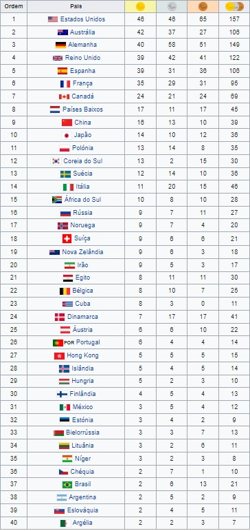

1996 Atlanta, Estados UnidosOs Jogos de 1996 Paraolimpíada foram em Atlanta, Geórgia, nos Estados Unidos, com o lema: "O Triunfo do Espírito Humano" (The Triumph of the Human Spirit).Modalidades→Atletismo→Basquetebol →Bocha →Ciclismo →Elevação →Levantamento de peso →Halterofilismo →Esgrima →Futebol de 7 →Goalball →Hipismo →Lawn bowls →Lutas →Natação →Snooker →Tênis de mesa →Tiro com Arco →Tiro →Voleibol Medalhas |